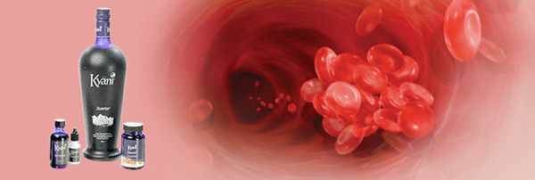
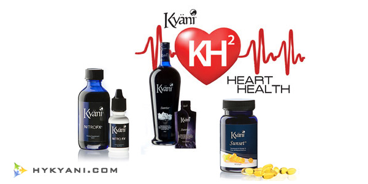

Kyani健康三角组合与血栓

血栓及随之而来的肺、脑、心脏栓塞引起了无数的医疗、经济和社会问题。试想如果把血栓的形成过程抑制住，那么将是一个多么大的善举！血栓的主要成因就是血管内组织损伤。对于伤口和溃疡来讲，凝血是积极的作用，这时血小板会凝结起来，形成血块，防止流血过多，保护伤口愈合。
然而，血管内部的组织损伤就是另一码事了。同样，血小板会凝结，并从此处一直沿血管壁扩展，最终产生了部分堵塞。流过狭窄段血管的血流会变得缓慢。正常情况下，血管内表面的细胞——内皮细胞，可以阻碍血小板附着在它们上面。
但是，一旦血斑块盖满了内皮细胞，随着血流的放缓，再加上已经没有内皮细胞可以再阻止血小板对血管壁的附着，血小板便加速了在此处的凝聚成块。这些凝块进一步减少了血管的直径，接着使血流变得更加缓慢。恶性循环不断继续，最终的结果是：动脉粥样硬化。
最终一部分动脉粥样硬化斑块开始剥离，血斑块留在各种脏器内，产生不同的病症。斑块如果留在肺部就会引起肺栓塞；如果留在冠状动脉，就是典型心脏病；如果最终留在脑部，就会引起中风。有些中风影响不是很大，但还有很多是很严重的甚至是致命的，这是由斑块位置决定的。
有什么办法可以阻止、至少是最大程度减少血栓的形成吗？答案是肯定的。Kyani尼多乐可以稳定血流，防止血流突然放缓，别忘了，这可是血栓形成的那个“恶性循环”的一个环节；另外Kyani新乐思也可以通过减少自由基来防止血栓的形成，自由基在组织损伤时会大量产生，并沿着血管壁蔓延，最后在这里形成了动脉粥样硬化斑块。最后，不要低估了Kyani新舒康生育三烯醇和欧米伽3（Omega-3）的作用，这些成分很好地减少甚至扭转高胆固醇、自由基损伤对组织的破坏作用
总而言之，Kyani三角组合包含了大量的营养物质。如果每天使用，就会大大减少斑块的发展及血栓的形成。注意：血斑块不仅会让人患上血栓、心脏病、中风等症，它甚至还会持续地对你的其他家族成员产生危害！
Kyani健康三角组合与心脑血管健康

心脑血管是人类健康的头号杀手。 —— 世界卫生组织
Kyani健康三角组合——新乐思、新舒康、尼多乐是Kyani的专利产品，全面解决心脑血管的健康，让我们拥有洁净的内环境，让毒垢和自由基无处藏身。本文将为大家介绍三款产品保护心脑血管健康的原理。
Kyani新乐思和心脑血管健康
研究证明蓝莓是强大的抗氧化剂，对我们身体的健康状况有极佳的提升作用，那么，你是否了解蓝莓对心脑血管健康的功效呢？
《医疗食品》杂志发表的一项研究表明蓝莓能够帮助人体预防心脏病和中风。另一项发表在《农业与食品化学》杂志的研究表明蓝莓可以降低胆固醇，以降低患心脑血管病的风险。
密歇根大学心脑血管研究中心进行的一项研究结果表明蓝莓能够：
- 降低胆固醇
- 降低甘油三酯
- 减少腹部脂肪
这些指标可以有效地减少心脏病发病率，改善血液循环。
此外，美国农业部分析了77种水果、蔬菜、草药、香料及坚果，结果蓝莓的抗氧化能力是最高的。抗氧化剂是对抗自由基的必需成分，细胞代谢出来的副产物对人体是有害的，可能引起心脏病、癌症和其他随年龄的增长患的疾病。
有研究表明阿拉斯加野生蓝莓的抗氧化能力是其他普通蓝莓的10倍。阿拉斯加恶劣的生长环境赋予了这些珍贵的蓝莓丰富的营养价值和药用价值。
Kyani新乐思是一款卓越的产品，采用阿拉斯加野生蓝莓和其他九种水果配方而成。Kyani新乐思也含有丰富的矿物质如维生素B1、维生素B6、维生素Ｅ等，这些成分时刻保护着我们的心脑血管健康。
Kyani新舒康和心脑血管健康
研究证明一种很特别的维生素——生育三烯酚与欧米伽３（Omega-3）脂肪酸对心脑血管健康有显著的作用。
维生素有两类，一种叫做生育酚，一种叫做生育三烯酚，科学证明伽马生育三烯酚和德尔塔生育三烯酚是保护心脑健康的最有效形式。而且，生育三烯酚可以抵抗自由基对红血球的伤害，降低胆固醇，减少慢性炎症，全面提升心脑血管的健康。
欧米伽3脂肪酸对心脑血管的健康有很重要的作用。它可以使红血球变得富有弹性，顺利地达到动脉末端。欧米伽3脂肪酸还有以下功能：
- 降低冠心病的发生（冠心病是为心脏供血供氧的小血管堵塞造成的）
- 降低患心率不齐的几率（心跳不规律）
- 降低心率
- 改善心脏的整体供血能力
Kyani新舒康是生育三烯醇（最有效的维生素Ｅ）与欧米伽３的完美结合，两者相互提升协同作用，保护我们的心脑血管健康。
尼多乐（一氧化氮）与心脑血管健康
研究发现尼多乐帮助人体产生的一氧化氮是强大的健康分子，其作用对心脑血管健康的提升尤其显著。1998年三位医学家因一氧化氮对心脑血管健康的作用获得了诺贝尔奖。
一氧化氮是著名的血管扩张剂，可以维护心脑血管的正常功能；同时，它还可以消除血管内的炎症。炎症的发生会引起非常多的心脑血管问题，心脏病的诱因之一就是心脏血管内的炎症。
一氧化氮还可以舒张动脉血管壁的平滑肌，扩张血管，使血流顺畅，从而平衡血压。一氧化氮会在我们运动的时候扩张血管，向运动肌肉和血管运输更多的氧、营养物、维生素、抗氧化剂及生长因子。
研究发展一氧化氮有以下作用：
- 扩张冠状动脉及其他动脉
- 降血压
- 改善静脉与淋巴管的血液循环
- 阻止血小板的凝结和血栓的形成
- 降低三油甘酯
《新英格兰医学期刊》的一项研究证明，一氧化氮可以阻止脂质斑块的形成，也就是说可以预防动脉硬化，防止心脏病的发生。一氧化氮还可以阻止血小板的凝结，防止干扰血流的血块的形成。
尼多乐是专利诺丽精华，可以帮助人体产生大量的一氧化氮。把一氧化氮加入您的日常饮食之中，看看一氧化氮对你的效果！
以心脏病、高血压、中风为代表的当今第一号杀手心脑血管疾病困扰了无数人，而Kyani健康三角组合正是我们开启心脏健康之门的钥匙，请认真食用Kyani健康三角组合，它将真正给您和家人带来健康，改变您的生活！
生育三烯醇与心脏健康
译者按：生育三烯醇是Kyani新舒康的主要成分之一，也叫“生育三烯酚”。新舒康含有取自胭脂树种子的纯生育三烯醇维生素E，非常的强效。我们可以阅读新舒康相关内容先简单了解生育三烯醇。总结一下说，维生素E有两大分支，一种是生育三烯醇，一种是生育醇。作为维生素E家族中两大分支之一，生育三烯醇虽然后被发现，但它的功能远远高于我们平时讲的维生素E，市面上的维生素E基本都是以生育醇或两者的混合物为主，而纯生育三烯醇的抗氧化能力是生育醇的275倍。医学界的大量实验都有力地证明生育三烯醇对心脑血管疾病有很强的预防和修复作用，下面，我们就来看看这些实验结果。
调节血脂：生育三烯醇的“成名曲”
在19世纪80年代，威斯康星大学的研究员最先发现了生育三烯醇的降血压效果，这也是第一次发现生育三烯醇也可以离开它的孪生兄弟生育醇独立工作。其实，生育三烯醇的降血压机理是相当复杂的，简单地说，它影响酶和蛋白质（3羟基-3甲基-戊二酰-辅酶还原酶 简写：HMGR）的产生，这些酶与蛋白质在肝脏中作用，开始降血压过程[1,2]。德耳塔和伽马生育三烯醇是对血脂调节作用效果最为显著的维生素E形式。
至今，对于生育三烯醇降胆固醇的的临床试验还不多，但是两个开放性试验显示，75mg的不含生育醇的德耳塔和伽马生育三烯醇可以降低15-20%的总固醇和低密度脂蛋白胆固醇。相应地，它们还可以降低同量的甘油三酯。一直以来，我们平时用的补维生素E的营养品中基本都是阿尔法生育醇形式的维生素E，然而，研究表明这种形式的维生素E是和生育三烯醇的作用有冲突的。打个比方，生育三烯醇与生育醇的混合物中，如果阿尔法生育醇的含量超过20%，那么调节血脂的作用就微乎其微了[3,4]，然而，不含生育醇或低生育醇的降血脂作用相当明显[5-7]。
生育三烯醇对心脑血管疾病的效果芳名远扬
生育三烯醇与颈动脉硬化：脑部和颈部的主动脉产生斑块会导致颈动脉硬化，如果这种斑块变得不稳定甚至产生破裂，那么就会导致中风。一个长达4年的对颈动脉硬化的研究表明，生育三烯醇补充品对颈动脉硬化的治愈率为88%。当然研究中还有一组没有用补充品的病人做实验对照，结果是60%的病人病情恶化，只有8%的病人好转[8,9]。在这四年中使用生育三烯醇补充品的病人平均总固醇降低14%，低密度脂蛋白胆固醇降低21%[10]。
生育三烯醇与单核细胞内皮细胞粘附：动脉粥样硬化的特点是动脉中形成的脂质条纹，它的起因是血液循环中的单核细胞（一种白细胞）粘附在动脉血管内皮上，而实验表明生育三烯醇对减少这种细胞粘连有很大的作用[11,12]。
德耳塔生育三烯醇对防止单细胞的粘连作用效果比生育醇和其他形式的生育三烯醇都好得多。德耳塔和伽马生育三烯醇比生育醇的作用效果分别是60倍和30倍[13]。VCAM-1蛋白质能够造成白细胞粘连在动脉壁，而德耳塔生育三烯醇能很好地抑制这种蛋白质的表达，因而效果很好[13]。
实际上，德耳塔生育三烯醇可以在动脉斑块形成的萌芽阶段就产生作用，所以还能很好地预防粥样动脉硬化。
生育三烯醇与高血压：大约33%的美国成年人都有高血压症(>140/90mm毫米汞柱)，25%的人处于高血压前兆(收缩压120-139mm毫米汞柱，舒张压80-89mm毫米汞柱)[15]。一些对动物的实验表明，生育三烯醇可以降血压，减少血浆和血管中的脂类过氧化物，改善抗氧化水平[16]。伽马生育三烯醇减少收缩压，增强一氧化氮合酶的活性，这两种因素都与原发性高血压的产生息息相关[17]。当然，也有许多实验也充分地证明生育三烯醇对人类也有很好的疏通动脉，降血压效果[18,19]。
生育三烯醇对代谢紊乱的效果非凡
糖尿病人比普通人群的心脏病发病率要高出3倍。通过对36%的美国成人进行统计评估，美国大概有2400万的糖尿病人和6000万预备糖尿病人，7400万人有新陈代谢障碍[20-23]。新陈代谢的紊乱反映了美国普遍肥胖的现状，三分之二的成人都超重[24,25]！这里有一些美国心脏协会和美国国立卫生研究院定义的新陈代谢紊乱标志：
- 血清三油甘脂过高（高于150mg/dL）
- 血压过高(高于130/85mmHg)
- 血糖过高(100 mg/dL及以上)
- 有益的高密度脂蛋白过少(男性低于40mg/dL，女性低于50mg/dL)
- 腰围过粗(男性超过102cm/40in，女性超过88cm/35in)
典型的2型糖尿病人患动脉粥样硬化的风险很大，80%的糖尿病人最终都死于动脉粥样硬化。除此之外，用来降低低密度脂蛋白的处方一般对糖尿病人都不太适合，因为它会引起各种各样的副作用。
临床实验表明生育三烯醇非常的安全，而且对代谢紊乱综合征有很好的调节效果。一些科研论文报告了生育三烯醇在60天内就可以针对糖尿病人降低23%的血清总脂肪指标，30%的总固醇指标，以及42%的低密度脂蛋白指标[28]。在一些开放性研究中[7]，使用胭脂树中的生育三烯醇补充品2个月之后（每天75mg），血脂明显降低，新陈代谢功能有显著提升，甘油三酯水平降低了20-30%。低密度脂蛋白与高密度脂蛋白的比值减少了12-21%，由此可见，生育三烯醇可以很好地降低心脑血管发病风险。
最近发现
在第二届国际生育三烯醇座谈会中（举办于美国加州长滩，2012年4月29日），研究者们展示了他们对生育三烯醇的最新研究成果，研究领域涉及癌症、皮肤健康、抗辐射、修复脑部功能、延缓寿命以及骨骼健康等。专注研究心脑血管健康和代谢紊乱综合征的发言人向我们提供了如下信息：
从胭脂树种子提取的对德耳塔生育三烯醇很大程度地缓解了经常用高脂肪高碳水化合物食物喂养的老鼠的代谢症候。此外，还减少了总脂肪含量和腹围，同时，葡萄糖和胰岛素水平也基本正常。
对于动物，生育三烯醇可以减少动脉粥样硬化、血管组织炎症，激活内皮细胞。研究含表明胭脂树生育三烯醇可以降血脂(富含德耳塔和伽马生育三烯醇)，在其他原料中提取的生育三烯醇是没有如此好的效果的。